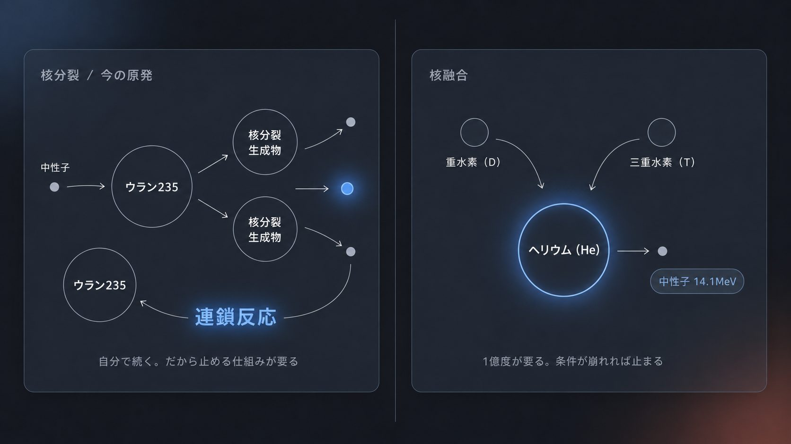
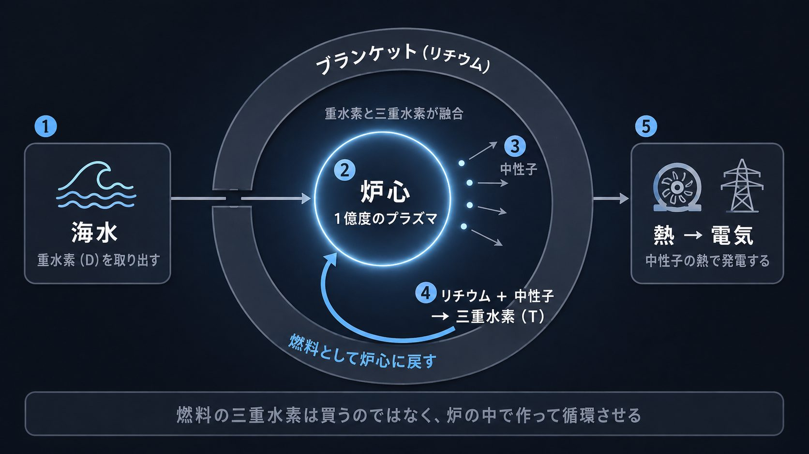
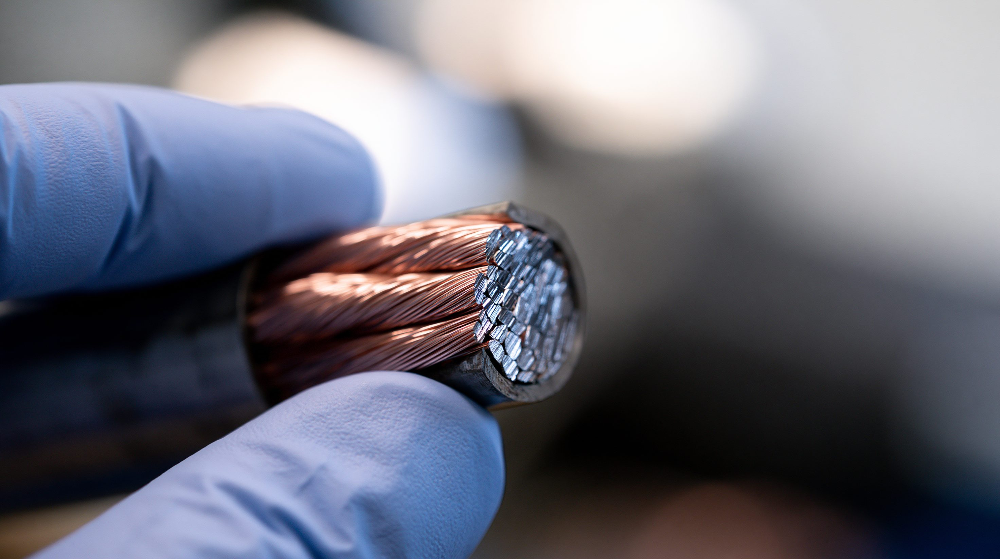

01論点 — 割る技術と、くっつける技術
核融合は、太陽が輝き続ける仕組みそのものを地上で再現しようとする技術である。原理は1930年代から知られていたが、実用化はいまだ実現していない——にもかかわらず、2026年に入って投資も建設も、かつてない速度で進み始めた。
核融合を理解するうえでまず必要なのは、いま動いている原子力発電所（核分裂）との違いを明確にすることだ。どちらも原子核の反応から莫大なエネルギーを取り出す点は同じだが、核分裂は重い原子核を「割る」ことで、核融合は軽い原子核を「くっつける」ことでエネルギーを生む。この操作の向きの違いから、燃料・制御・廃棄物のすべての違いが生まれる。
では、核融合でエネルギーが生まれる理由は何か。仕組み自体は難しくない。重水素と三重水素という水素の仲間どうしが結合してヘリウムになるとき、結合後の質量は結合前よりわずかに軽くなる。この失われた質量が、アインシュタインの式（E=mc²）に従ってエネルギーに変わる——太陽の中心で起きているのと同じ反応である。
- 燃料
- ウラン235（天然に存在する重い元素を濃縮して使う）
- 反応の性質
- 自分で連鎖して続く。放っておくと反応が加速するため、制御棒などで意図的に抑え続ける必要がある
- 廃棄物
- 核分裂生成物や超ウラン元素を含み、一部は数万年単位で高い放射能を保つ
- 燃料
- 重水素（海水中に豊富）と三重水素（自然界にほぼ存在せず、炉内でリチウムから作る必要がある。詳細は05）
- 反応の性質
- 連鎖しない。超高温・高密度・十分な閉じ込め時間という条件がひとつでも崩れれば、反応は自然に止まる
- 廃棄物
- 核分裂生成物を含まず、炉壁の放射化した部材の多くは約100年で低レベル放射性廃棄物相当まで減衰する
核融合企業への投資は、この1年で44.8億ドルと過去最高を記録した。アメリカの民間企業は2028年、中国は2030年の発電実証を掲げる一方、国際協調で進むITERの本格運転は2039年。同じ技術で、なぜこれほど到達目標の年が違うのか。最初に電気を売るのは誰か。


02タイムライン — 70年の実験と、この2年の建設ラッシュ
核融合の研究は70年に及ぶが、実際に「発電所を建てる」段階へ各国がそろって動き出したのは、ここ2年ほどのことである。
トカマク方式の考案
ソ連の物理学者たちが、磁場でプラズマをドーナツ状に閉じ込める「トカマク」方式を考案。以後70年、核融合研究の主流の設計となる。
JETがQ=0.67の世界記録
イギリスの欧州合同トーラス（JET）が、24MWの加熱入力に対し16MWの核融合出力を得てQ=0.67を記録。この値は26年間破られなかった。
ITER建設協定に7極が署名
日本・アメリカ・欧州連合・ロシア・中国・韓国・インドの7極がITER建設協定に署名。南フランスのカダラッシュで建設が始まった。
NIF、史上初の「点火」
アメリカの国立点火施設（NIF）が、レーザーが標的に届けた2.05MJに対し3.15MJの核融合出力を得て、投入を上回る「点火」を史上初めて達成した（詳細は04）。
JET、69メガジュールで運転終了
JETが最後の重水素・三重水素実験で69メガジュールの核融合エネルギーを記録し、35年に及ぶ運転に幕を閉じた。
ITER、新ベースラインを発表
ITER機構が計画を見直し、重水素・三重水素運転の本格開始を2039年に設定。従来計画から4年遅らせ、費用も50億ユーロ超増加した。
日本、発電実証を2030年代へ前倒し
日本政府が「フュージョンエネルギー・イノベーション戦略」を改定。従来の2050年ごろという発電実証目標を、2030年代へ前倒しした。
中国、国有企業を束ねた新会社を設立
中国核工業集団を中心とする国有企業群が「中国聚変能源有限公司」を上海に設立。登録資本は150億元（約21億ドル）に達する（詳細は03）。
ヘリオン、商用発電所の建設に着手
アメリカの民間企業ヘリオン・エナジーが、ワシントン州で発電所「Orion」の建設に着手。Microsoftへ2028年に送電することを掲げる（詳細は03）。
ドイツ、国内建設の行動計画を閣議決定
ドイツ政府が「Fusion Action Plan」を閣議決定。連邦のインフラ基金から7億5,500万ユーロを投じ、2040年までに国内へ世界初の核融合発電所を建設する方針を示した。
NIFが11回目の点火、投資は過去最高に
6月20日、NIFが11回目の点火を記録（出力7.9MJ、target gain約3.8）。7月には核融合産業協会（FIA）が年次報告で、民間投資の累計が142.4億ドルに達したと発表した（詳細は04）。
CFSが10億ドルを追加調達、ITERの建設は前倒しで進む
7月28日、ITERはトカマクのセクターモジュール9基のうち6基の設置を予定より半年早く完了。7月30日にはCFS（コモンウェルス・フュージョン・システムズ）が単独ラウンドで10億ドルを追加調達し、累計調達額は40億ドルに達した。8月25日には日本のQST・東芝が製造した超伝導コイルの低温通電試験にも成功している。
035つの視点 — 誰が、どの物差しで競っているか
「一番乗り」を目指す主体は一つではない。何をもって勝ちとするかの物差しも、主体ごとに違う。5つの立場を、それぞれの言い分のまま並べる。
| 立場 | 基本スタンス | 最大の主張 | 最大の関心事 |
|---|---|---|---|
| アメリカ（民間） | 民間主導、国家は下支え | 市場の需要が動かす技術であり、国家の計画表ではない | 巨大テック企業の電力需要を最速で満たすこと |
| 中国 | 国家主導、建設速度が武器 | 国家の音頭で建設速度そのものが競争力になる | エネルギー安全保障と技術覇権の両方 |
| 欧州＋ITER | 国際協調、時間をかけて厚みを作る | 急ぐより、確実に技術基盤を積み上げる | 国際協調の枠組みと着実な技術基盤 |
| 日本 | 前倒しを掲げつつ、部品で握る | 発電実証は前倒しし、部材で存在感を持つ | エネルギー安全保障と部材分野の競争力 |
| 懐疑派 | 実証データを待つ側 | 「常に30年後」の看板はまだ下ろせていない | 誇大な期待より、実証されたコストと寿命 |

04データ・統計 — 投資の急拡大と、実験の到達点
民間投資の累計推移（年ごと）
2026年は7月時点。直近1年（2025年7月〜2026年7月）だけで44.8億ドルが投じられ、前年比69%増の過去最高となった。
出典：核融合産業協会（FIA）「Global Fusion Industry」各年版報告
NIF点火実験 — 出力エネルギーの到達点推移
NIFが公表した点火実験（target gain 1超）の確認できたショットを、選別せず時系列で並べた。記録は単調に伸びているのではなく、上下しながら更新されている。レーザーが標的に届けたエネルギーに対する比率であり、施設全体の消費電力とは別の指標である点に注意（詳細は05）。
出典：ローレンス・リバモア国立研究所（LLNL）公表資料
05深掘り — 「実験の成功」と「発電の実用化」の距離
記録は着実に更新されている。だが実験施設としての到達点と、発電所として採算が取れる到達点の間には、まだ越えていない3つの関門がある。
核融合の「一番乗り」を分けるのは、科学的なブレークスルーというより、誰が先に建設を終えるかという工学の速度になりつつある。中国は国家の力で複数の実験炉を並行建設し、アメリカの民間企業は巨大テック企業の電力需要を追い風に工期を切り詰める。国際協調で進むITERは、その両者よりゆっくりと、しかし最も広い実験データを積み上げている（詳細は03）。最初に電気を売る主体が、最も優れた技術を持つ主体だとは限らない。燃料の供給網と部材の耐久性という関門を最初に越えた者が、結局は最後まで残ることになるだろう。